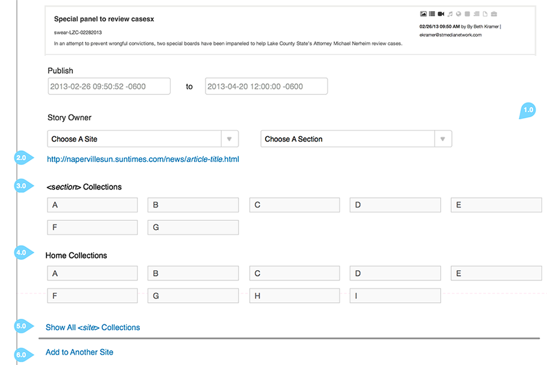

HermesWeb Application
Interaction Design | Information Architecture | Research | Front-End Development
Hermes is a content management system built to support content management, content publishing, site templating and site generation for small local newspaper websites. The goal was to create a system that would allow content to be shared across multiple sites and the ability to quickly bring up new sites.

My process began by learning the inner workings of the newsroom and specifically the digital content producers publishing workflow. An audit was needed to learn the type of content and the elements used to build the content pieces (Images, Video, Byline, Body, Summary, etc.). Also, I needed to learn the language/terminology of the newsroom to match that language to the appropriate actions in the Hermes application. I did this through interviews and observations. I then mapped the publishing workflow and how it related to the new system.
I then wireframed some of the core screens to show the content producers and the software engineers and discuss the interactions and workflow of the primary tasks (creating and publishing content). There were many iterations of wireframes as I learned more about the process and the pain points of the producers through further observations.
My role in the Hermes project was to as the UX lead of the internal producer tools. This role required attending daily stand-up with the software engineers, some front-end development of the internal tools using Bootstrap, and communicating interactions to an offshore development team. I also acted as the producer user advocate. This involved meeting with the producers to discuss future improvements, prioritization of features, workflow enhancements, and any bug reporting.
Hermes was launched in beta for the management of one news site. Over a period of approximately six months, Hermes became the content management system for 31 news sites.